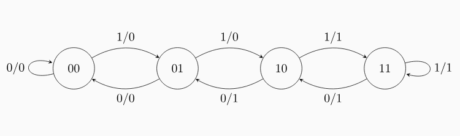

Branch prediction is when CPUs in hardware try to predict whether or not a branch instruction is taken or not taken to avoid pipeline stalls.
For the purposes of this discussion, the details of why branch predition is useful and how it is implemented is beside the point. Our sole objective right now is to think about how code is written and abuse it's properties to yield good prediction in "simple" ways.
Before we begin I want to begin with two simple examples:
lfsr_step:
andi t0, a0, 1
srli a0, a0, 1
beqz t0, done ^__^
li t1, 0xB400 (oo)\__________
xor a0, a0, t1 (__)\ )\/\
done: ||--------w|
ret \|/ || || \|/
This is the RISC-V Assembly for a linear feedback shift register (LFSR), a way to generate psuedo random numbers. We can think of the branch instruction as being "randomly" taken having roughly 1/2 probability of being taken. A side note is that the probability of this branch being taken is exactly 1/2 the proof is actually quite difficult from first principles... but take my word for it.
If you want a simpler problem then maybe prove it for a PRNG that looks like:
outer:
mv t4, s0
li t0, 1 ,===,
li t1, 3 (_____)
inner: ,===,
andi t3, t4, 1 (_____)
beqz t3, 1f
mul t0, t0, t1
remu t0, t0, t2 /__-
1: mul t1, t1, t1 __ . \
remu t1, t1, t2 \ \ /
srli t4, t4, 1 \___\/
bnez t4, inner ||
andi t0, t0, 1 ____
beqz t0, 2f | \
addi s2, s2, 1 | \
2: addi s0, s0, 1 | \
blt s0, s1, outer \|/ | \ \|/
It seems if we want to predict branches in these methods to a high accuracy we are at a loss. We cannot do better then randomly guessing or just always guessing taken or not taken.
This is actually not true. We can get 100% prediction and the strategy is very simple. Enumerate all possible states and replay them on a 2nd attempt. Although this strategy sounds unfeasable, especially when the state space is very large, it is actually the basis of most branch predictors today.
Let's now consider a more simple example:
loop: . . . .
andi t1, t0, 15
bnez t1, 1f . . . .
addi t2, t2, 1
1: andi t1, t0, 1 == .---.
beqz t1, 2f == __/_:o _\__ . .
addi t2, t2, 1 . == (___________)
2: addi t0, t0, 1 . .
andi t1, t0, 7 . == .---.
bnez t1, loop . . == __/_o7 _\__
blt t0, a1, loop . == (___________)
Notice that near by branches inform us about other branches, branch instructions often repeat, and some of the branches exibit patterns. It seems there is a lot more here we can work with here! We can even think about some basic strategy here. Maybe we can compress the behaviors of certain branches down to either being a "always taker" or a "never taker"; maybe consider the history of a previous branch instruction and guess that.
So it seems in programs where there are patterns we can compress the space of all branch possiblities down and retain performance. But is there something other than the randomness the influences how much memory that we have to use to predict accurately? Does the way that we deal with these patterns impact how much we have to store? I don't know! Let's try an example:
Say we have a global pattern of branch histories that repeats like this: \[ T, NT, NT, T, T, NT \] Maybe we begin with the strategy we last talked about which is storing the last state of a certain instruction and using that later to predict. This would work but quickly falls apart if the number of instructions that follow this pattern are very large (imagine repeated sets of 6 branch instructions that exhibit the same pattern). So it seems we need a more clever strategy in this specific case.
Maybe lets try to learn the function: \[ f : \{0,1\}^n \rightarrow \{0,1\} \] where n is the number of bits needed to represent the past n branches and the output is our prediction. We want n to just large enough such that for any contigious substring of length n of the global branch history is unique. Why? Because we want this function to be one to one between pattern and branch instruction.
In our case $n=3$ and the associated subsequences look like:
\[ \{T, NT, NT\}, \{NT, NT, T\}, \{NT, T, T\}, \{T, T, NT\}, \{T, NT, T\}, \{NT, T, NT\} \]
We can use these six sets to states and map them to $\{T, NT, NT, T, T, NT\}$ in order. If we see a state where our previous three bits of history take on a certain pattern, we can consult our function for a prediction. Thus, for the cost of a global shift register on chip, we can learn can learn and predict the pattern with great accuracy in steady state.
Why do this pattern history? Well it is simple... it's just a table we have to memorize a table of size $2^n$. But maybe we can try to just just learn the longest pattern in the data that we have currently seen and predict according to that. This is not a bad thought, the algorithm to do this is called Ukkonen's algorithm it's hard to implement in hardware... and anyway, this is a good enough approximation for large branch histories n.
Notice this function differs from the one above since it only scales with the length of the global history pattern and how complex (or not) the pattern is. This scheme may also lets us predict with 100% accuracy any program where the global branch history pattern has unique contigious substrings of size three. Strange requirement? Maybe. But its a win if you ask me!
From this exercise the function that we are using to get predictions is also important not only the randomness of a program.
I think it might be useful to mention that people do actually implement storing the way a branch instruction last resolved to but with a caveat. People will use what is called a 2-bit counter to predict a specific branch instructions.
A two bit counter can be illustrated with the following FSM. We predict not taken if we are in the bottom two states, and taken otherwise.

This is better since it avoids pathological cases like the pattern $T, NT, T, NT$ that result in 0% of instructions predicted correctly. Obviously there still exists pathaological cases for n-bit counters, but the patterns that are pathalogical get more and arbirary for larger n. The downside of a larger n is that it's harder to learn a new pattern if our branch pattern changes.
Now that we have some intuition for the problem lets begin to formalize this intuition. It might be useful to think about this problem in terms of something called a "working set." In memory caching this is the set of memory addresses a certain program needs in order to execute it's functionality.
An analagous working set for branch prediction are the all the possible states a certain number of branch instructions are allowed to take on. The size of this set is proportional to the error we are willing to accept, how predictable a certain bit of code is, number of branch instructions we are trying to predict simultaniously, and the function we are using to generate predictions.
From this formalization we can get an approximate about of memory we should use for these predictions. We can say that we should size the memory such that it smaller than some percent $\epsilon$ of all sets we will see. Where $\epsilon$ is small.
With all of this said lets begin with some pretty good simple branch predictors. Gshare.